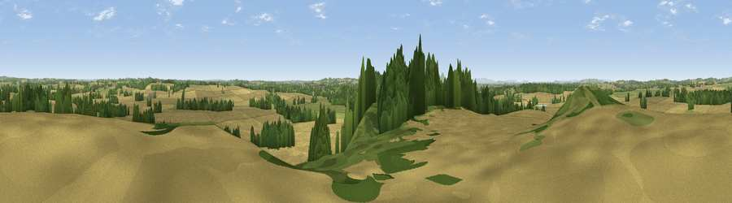

Viewpoint near Forton
#20159 in England · top 35% of its area beats it · near FortonThe view, rendered

A 360° render of this exact spot computed from the terrain model, tree cover and land cover — summer colours, afternoon light, calibrated against photographs of famous viewpoints. Real trees, hedges and buildings will differ in detail.
The panorama
Grey silhouette: terrain skyline in each direction (720 bearings, Earth curvature and refraction included). Dashed green: skyline with trees (+15 m) and buildings (+8 m) as obstacles. Blue strip: how far the ground is visible on each bearing.
Where the view opens
Wedge length = distance to the farthest visible ground on that bearing (vegetation-aware). Rings at 10, 25 and 50 km.
What fills the view
70% cropland · 15% woodland · 13% grassland · 1% built-up
Angular shares of the visible panorama (visual magnitude), not map area. Landscape diversity 0.38 (0–1 Shannon).
Key numbers
More beautiful places nearby
The staircase of upgrades: each row has a higher view potential than everything closer. Driving times are estimates from straight-line distance, calibrated against real road routing — check an actual route before setting out.
| Place | Direction | Drive | Score |
|---|---|---|---|
| Viewpoint near Forton | S · 2 km | ~4 min | 63.8 |
| Viewpoint near Newport | S · 2 km | ~6 min | 66.4 |
| Viewpoint near Priorslee Village | S · 11 km | ~21 min | 70.4 |
| Viewpoint near Marchamley | WNW · 15 km | ~27 min | 77.5 |
| The Ercall | SW · 16 km | ~28 min | 79.4 |
| Viewpoint near Little Wenlock | SW · 18 km | ~31 min | 84.2 |
| The Wrekin | SW · 18 km | ~32 min | 85.0 |
| Viewpoint near Little Wenlock | SW · 19 km | ~32 min | 86.6 |
52.80010, -2.38670 · source: screening · position refined by local search. Computed location — check access rights before visiting.